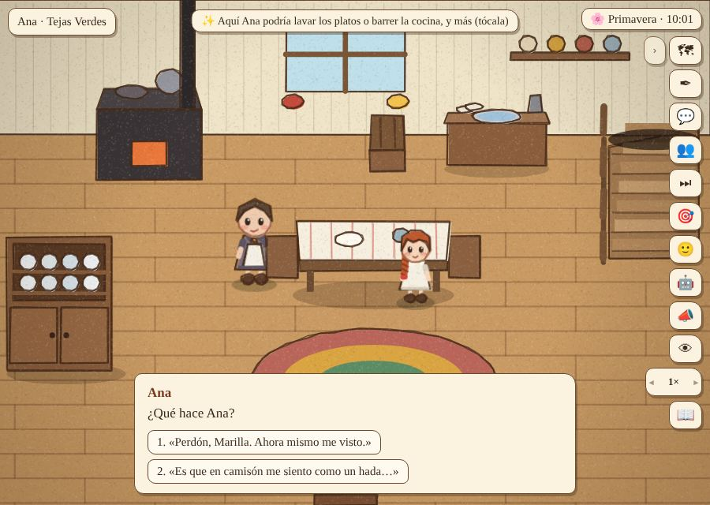
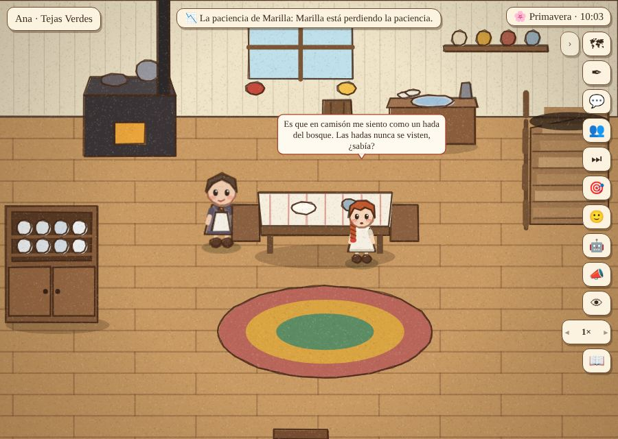
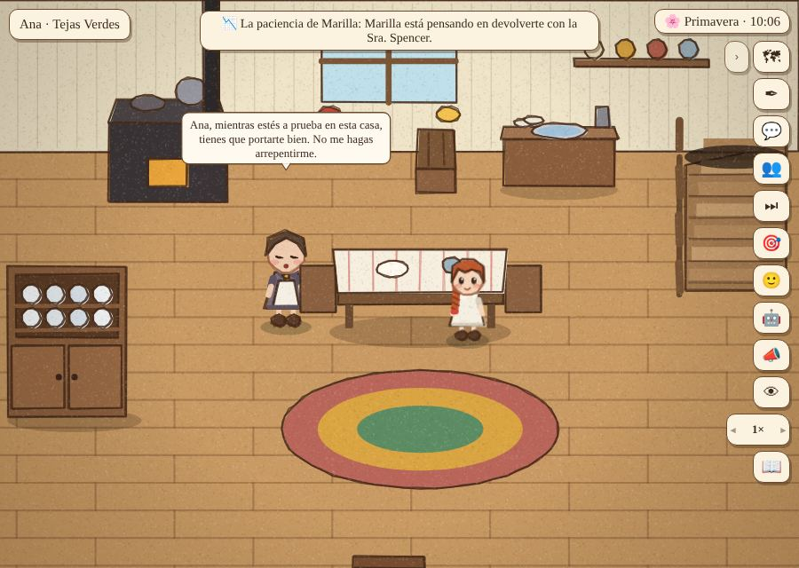
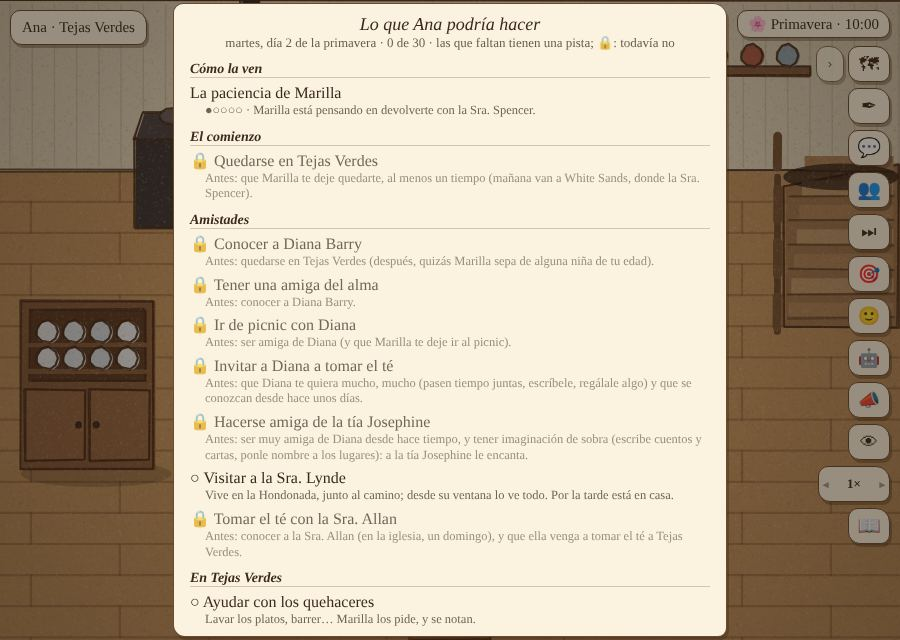
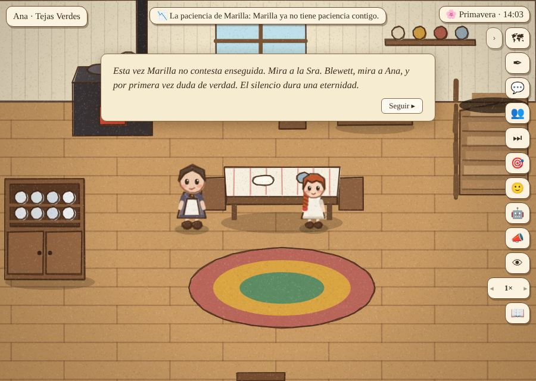
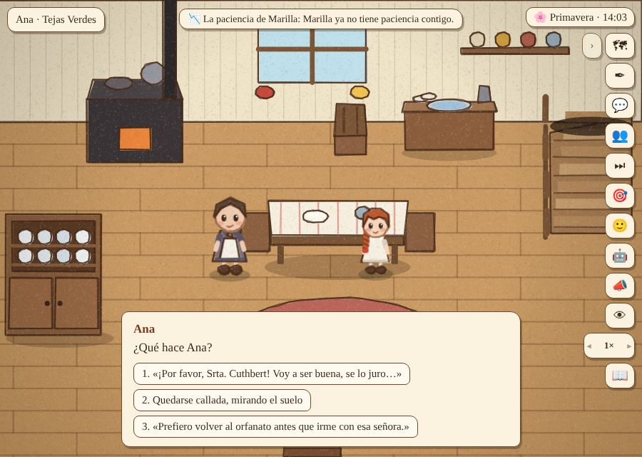
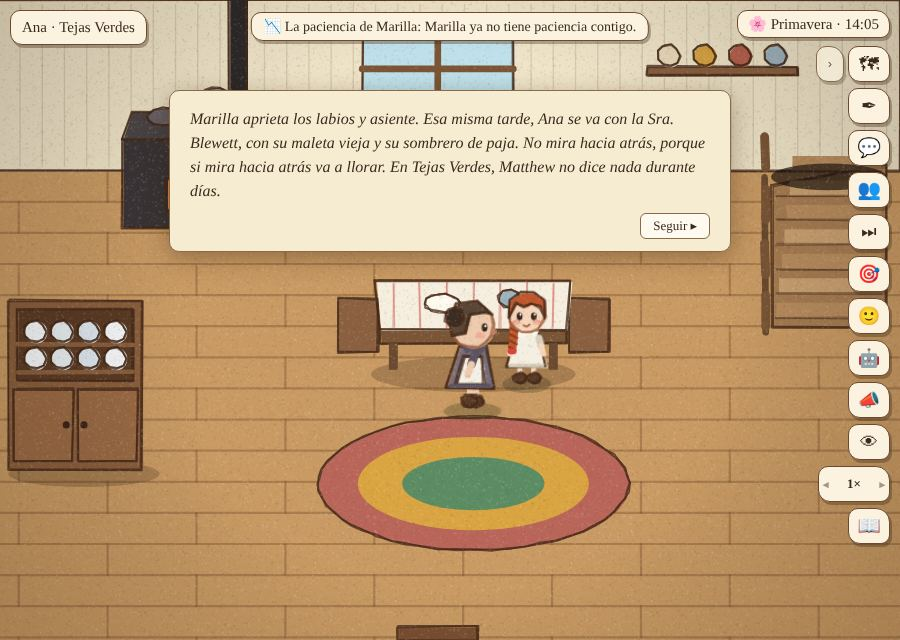
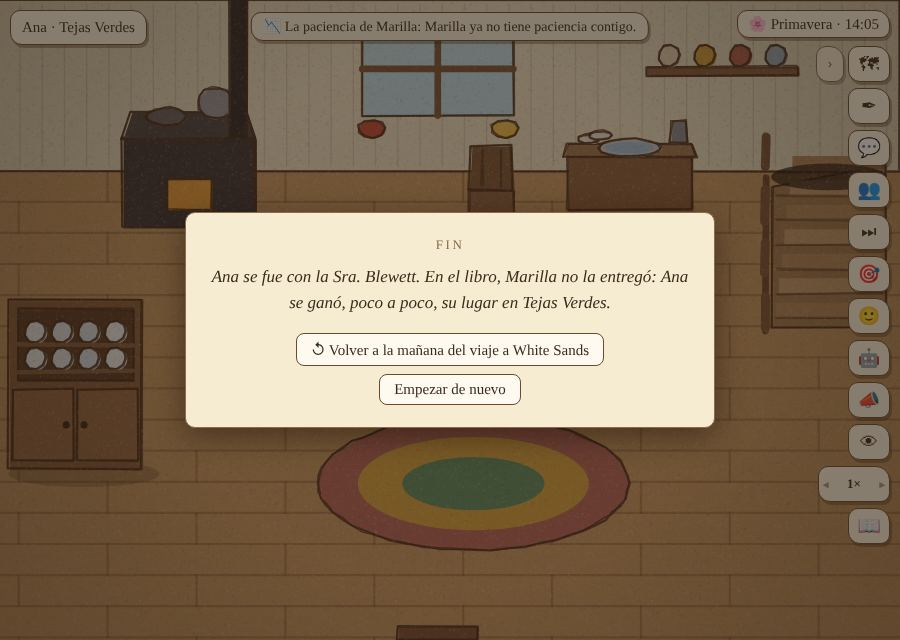

La paciencia de Marilla
Qué pasa si Ana se porta mal mientras está a prueba: Marilla puede devolverla. Está hecho con las mecánicas generales del motor (escenas con condiciones, elecciones, cualidades), sin casos especiales. ← Partida 3
Cómo funciona:
- Una cualidad nueva, «la paciencia de Marilla», de Marilla hacia Ana. Empieza en 3, va de 0 a 5 y solo cuenta mientras Ana está a prueba. Se declara en
habilidades.txt, como cualquier habilidad. Ahora las cualidades pueden ser de alguien hacia otro y tener umbrales al subir y al bajar. - Las faltas son escenas. Se disparan cuando Marilla la ve (
ve:marilla) haciendo algo que en su casa no se hace:- andar en camisón a media mañana;
- dejar la ropa en el suelo otra vez;
- andar lejos de noche (sale a buscarla con el farol);
- no estar el día del viaje (la busca y la trae);
- estallar con la Sra. Lynde.
- Se recupera ayudando en la casa (una vez al día) y pidiéndole perdón (una conversación nueva, una vez al día).
- Marilla avisa al bajar a 2 («No me hagas arrepentirme») y a 1 («Una más así y te llevo de vuelta con la Sra. Spencer»). El cuaderno lo muestra primero, en «Cómo la ven».
- White Sands sin paciencia: Marilla duda ante la Sra. Blewett y Ana elige cómo reacciona. Si Matthew la quiere mucho, la salva él; si suplica y Marilla le tiene cariño, o si calla y Marilla la quiere, se queda «por última vez»; si no, se va con la Sra. Blewett.
- Ya a prueba: si la paciencia vuelve a 0, hay una conversación seria (la última oportunidad). Si vuelve a caer, Marilla la lleva de vuelta.
- Finales y puntos para volver (mecánica nueva del motor): el desayuno del día del viaje guarda un punto. El final muestra una tarjeta «FIN» con «Volver a la mañana del viaje» o «Empezar de nuevo».
- Para quedarse para siempre, ahora también hace falta que a Marilla le quede paciencia (3 o más).
Cómo se ve








Cómo se comprobó
tools/paciencia.js recorre ocho casos, cada uno en un navegador nuevo: las faltas con y sin disculpa, el aviso, el cuaderno, el perdón, la ayuda, la búsqueda el día del viaje, los cuatro desenlaces de White Sands, la última oportunidad, la noche lejos, el final, abrir el juego con el final y volver a la mañana del viaje. Todos pasan.